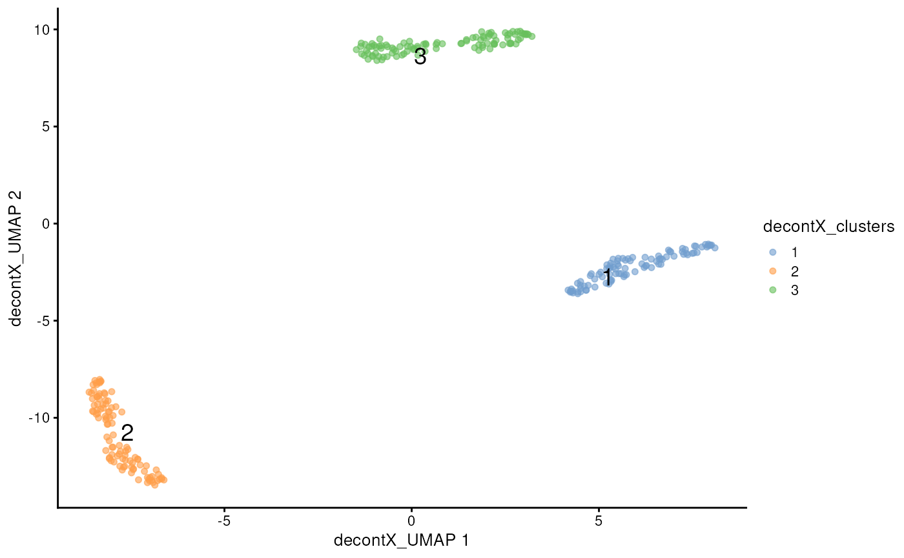

A scatter plot of the UMAP dimensions generated by DecontX, or of another reducedDim, with cells colored by the estimated proportion of contamination (between 0 and 1).
Usage
plotDecontXContamination(
x,
batch = NULL,
colorScale = c("blue", "green", "yellow", "orange", "red"),
size = 1,
reducedDimName = NULL
)Arguments
- x
Either a SingleCellExperiment with
decontXresults stored inmetadata(x)$decontXor the result from running decontX on a count matrix.- batch
Character. Batch of cells to plot. If
NULL, then the first batch in the list will be selected, or every cell whenreducedDimNameis given. DefaultNULL.- colorScale
Character vector. Contains the color spectrum to be passed to
scale_colour_gradientnfrom package 'ggplot2'. Default c("blue","green","yellow","orange","red").- size
Numeric. Size of points in the scatterplot. Default 1.
- reducedDimName
Character. Name of a reducedDim of
xto plot the contamination on instead of the decontX UMAP, for example after runningdecontXwithembedding = FALSE. Its first two columns are used. Only whenxis a SingleCellExperiment. Withbatch, the cells of the batch are found from the batches of the decontX run, soxneeds the same cells, in the same order, as that run. DefaultNULL.
See also
See decontX for a full example of how to estimate
and plot contamination.
Examples
# Generate matrix with contamination
s <- simulateContamination(seed = 12345)
library(SingleCellExperiment)
library(scater)
sce <- SingleCellExperiment(list(counts = s$observedCounts))
sce <- decontX(sce)
#> --------------------------------------------------
#> Starting DecontX
#> --------------------------------------------------
#> Sat Nov 21 17:43:03 2026 .. Analyzing all cells
#> Sat Nov 21 17:43:03 2026 .... Converting to sparse matrix
#> Sat Nov 21 17:43:03 2026 .... Generating UMAP and estimating cell types
#> Sat Nov 21 17:43:04 2026 .... Estimating contamination
#> Sat Nov 21 17:43:04 2026 ...... Completed iteration: 9 | converge: 0.0009154
#> Sat Nov 21 17:43:04 2026 .. Calculating final decontaminated matrix
#> --------------------------------------------------
#> Completed DecontX. Total time: 0.2591727 secs
#> --------------------------------------------------
# Plot contamination on UMAP
plotDecontXContamination(sce)
 # Plot decontX cluster labels on the UMAP
plotReducedDim(sce, dimred = "decontX_UMAP",
colour_by = "decontX_clusters",
text_by = "decontX_clusters")
# Plot decontX cluster labels on the UMAP
plotReducedDim(sce, dimred = "decontX_UMAP",
colour_by = "decontX_clusters",
text_by = "decontX_clusters")

# Plot percentage of marker genes detected
# in each cell cluster before decontamination
s$markers
#> $CellType_1_Markers
#> [1] "Gene_47" "Gene_32" "Gene_86"
#>
#> $CellType_2_Markers
#> [1] "Gene_70" "Gene_33" "Gene_48"
#>
#> $CellType_3_Markers
#> [1] "Gene_74" "Gene_26" "Gene_20"
#>
plotDecontXMarkerPercentage(sce, markers = s$markers, assayName = "counts")
 # Plot percentage of marker genes detected
# in each cell cluster after contamination
plotDecontXMarkerPercentage(sce, markers = s$markers,
assayName = "decontXcounts")
# Plot percentage of marker genes detected
# in each cell cluster after contamination
plotDecontXMarkerPercentage(sce, markers = s$markers,
assayName = "decontXcounts")
 # Plot percentage of marker genes detected in each cell
# comparing original and decontaminated counts side-by-side
plotDecontXMarkerPercentage(sce, markers = s$markers,
assayName = c("counts", "decontXcounts"))
# Plot percentage of marker genes detected in each cell
# comparing original and decontaminated counts side-by-side
plotDecontXMarkerPercentage(sce, markers = s$markers,
assayName = c("counts", "decontXcounts"))
 # Plot raw counts of indiviual markers genes before
# and after decontamination
plotDecontXMarkerExpression(sce, unlist(s$markers))
# Plot raw counts of indiviual markers genes before
# and after decontamination
plotDecontXMarkerExpression(sce, unlist(s$markers))